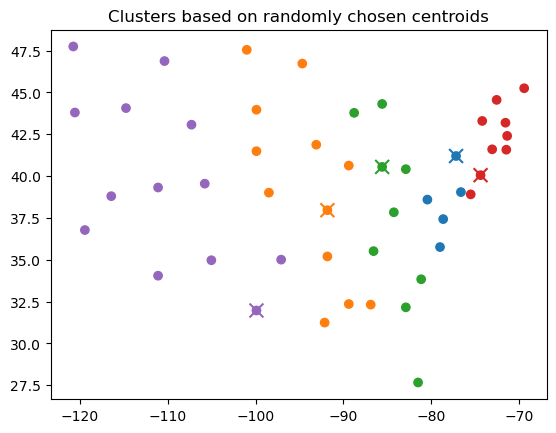
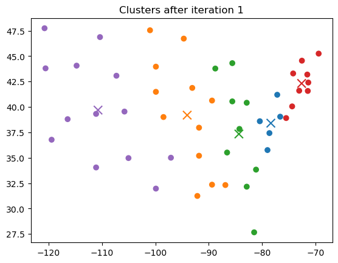
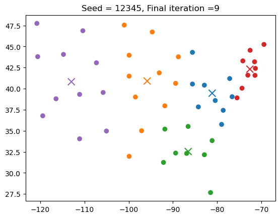
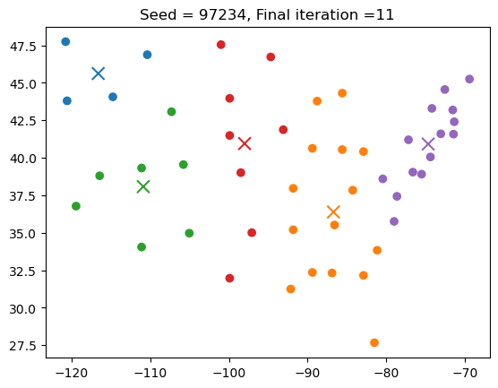
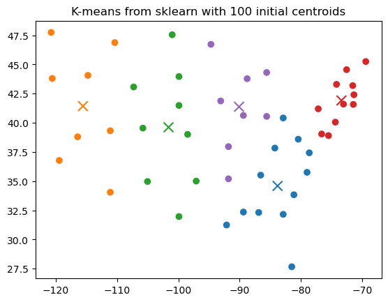
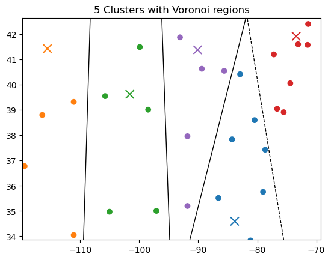
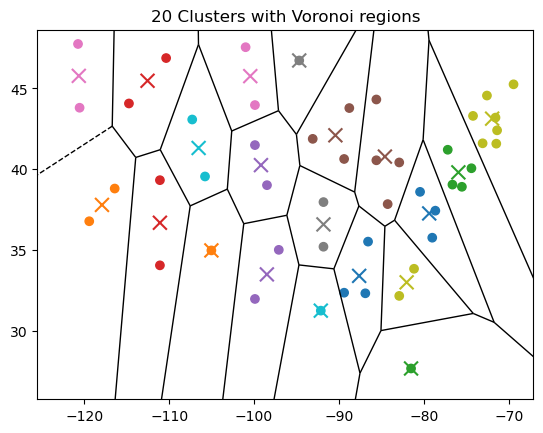
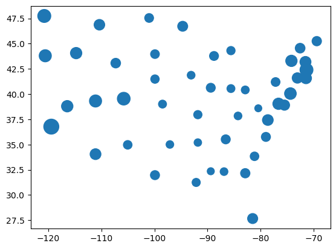
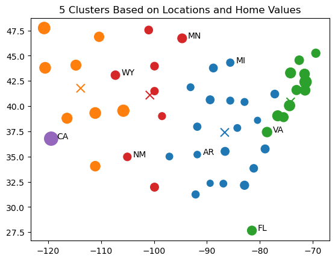

Clustering Data: The K-Means Algorithm
Contents
13.1. Clustering Data: The \(K\)-Means Algorithm#
A common problem in data science is taking data and assigning it disjoint labels (or categories). Essentially, we wish to find a function that given a data point, returns its label.
There are two fundamental approaches, depending on how we create that function:
DEFINITION
- supervised learning:#
In supervised learning, we have a training set that consists of labeled data points, meaning that for each data point, we know its correct label.
DEFINITION
- unsupervised learning:#
In unsupervised learning, we only have access to unlabeled data.
The above classifications determine the terminology we use for labeling data:
DEFINITION
- classification:#
The application of supervised learning to find a function that can map data points to a set of labels.
DEFINITION
- clustering:#
The application of unsupervised learning to find a function that can map data points to a set of labels.
One particular distinction is that in classification, we are using a training set to generate a function that can map a new data sample to a label. In clustering, we do not know the labels for any of the data and are often trying to determine a ``good’’ labeling for all of the points in a data set.
Some of the applications of clustering include:
Customer segmentation: Customers are grouped according to characteristics, such as demographics or buying patterns.
Document classification: Documents are separated into topic groups based on their content.
Network analysis: Groups of individuals or organizations are identified based on connections, such as messages exchanged or shared acquaintances.
Anomaly detection: Points that do not fit well clusters that are identified in the data may indicate an anomaly. For instance, this could be applied to identify fraudulent activity in financial transactions.
Compression: Clustering can be used to compress a data set by representing all the points in a cluster by a single representative value. Then only the list of representative values and the cluster labels need to be stored or transmitted.
On of the most common clustering algorithms is the \(K\)-means algorithms. It is a a simple but powerful clustering algorithm:
DEFINITION
- \(K\)-means algorithm:#
The \(K\)-means algorithm partitions the points in a data set based on Euclidean distance. Each set of data points is said to be assigned to a cluster, and the cluster is represented by its mean, which is also called its centroid. The algorithm is iterative, gradually refining the set of clusters and centroids in each iteration.
DEFINITION
- centroid (\(K\)-means)#
The mean of the points assigned to a cluster. In the assignment step of the \(K\)-Means algorithm, points are assigned to the nearest centroid.
Consider vector data \(\mathbf{x}_0, \mathbf{x}_1, \ldots, \mathbf{x}_{N-1}\). Let
\(C_{i}^{(j)}\) be the set of points assigned to the \(i\)th cluster in the \(j\)th iteration, and
\(\overline{\mathbf{x}}_{i}^{(j)}\) be the centroid (mean) of the \(i\)th cluster in the \(j\)th iteration.
Mathematically, we can write
Note that centroid is a vector of the same dimension as the points \(\mathbf{x}_i\).
\(K\)-means requires the number of clusters to be specified in advance, although we can try multiple different values of \(K\) and determine which value offers a good tradeoff between the error (from the data to the centroids) and the number of clusters. Selection of the number of clusters is beyond the scope of this book, but interested readers can start here:
https://en.wikipedia.org/wiki/Determining_the_number_of_clusters_in_a_data_set
K-Means Algorithm
Each iteration of the \(K\)-means algorithm consists of three steps:
Compute Centroids: The centroids of each cluster is computed as the mean of the points assigned to that cluster. In iteration 0, the centroids may be assigned in many different ways. For the purposes of this discussion and the example below, the initial centroids are set to \(K\) randomly chosen data points (Forgy’s method).
Assign Points to Clusters: For each point \(x_k\), the distance to each cluster mean \(\overline{\mathbf{x}}_{i}^{(j)}\) is computed. The point is assigned to a cluster for which the distance is minimum.
Determine Whether to Stop: If the cluster assignment does not change or a maximum number of iterations is reached, the algorithm terminates.
Because the initial centroids are generally chosen randomly, the \(K\)-means algorithm is often rerun multiple times with different initial conditions, and the clustering that produces the smallest total distance between the points and their assigned centroids is the final result.
This algorithm is often most powerful when used on data with more than two dimensions, but that also makes visualization of the algorithm more complicated. Let’s apply this data to clustering the 48 states in the continental United States. We will do this in two ways:
First, we represented each state by a vector of its latitude and longitude and perform \(K\)-means on the two-dimensional data to find 5 regions. We implement the different steps of the \(K\)-means algorithm and show the progression of the \(K\)-means algorithm across the steps. We also show how to use the scikit-learn library to perform \(K\)-means with multiple initial conditions.
Second, we represent each state by a three-vector that include latitude, longitude, and a scaled version of the average home value in that state. We perform \(K\)-means again and compare with the clustering result based only on geolocation.
13.1.1. Two-Dimensional K-Means Example#
Let’s start by reading the states’ latitude and longitude data into a Pandas dataframe:
import pandas as pd
github = 'https://raw.githubusercontent.com/jmshea/Foundations-of-Data-Science-with-Python/main/'
file = '13-clustering-transforming/data/states.csv'
states = pd.read_csv(github + file)
This data is from the Google Dataset Publishing Language documentation at https://developers.google.com/public-data/docs/canonical/states_csv and is used in the CC-BY4 license.
Let’s rename the columns to make them more user-friendly and drop the data for the District of Columbia, Puerto Rico, Alaska, and Hawaii to restrict our investigation to the 48 continental states:
states = states[['state', 'name', 'latitude', 'longitude']]
states.set_index('state', inplace=True)
states.drop(['DC', 'PR', 'AK', 'HI'], inplace=True)
states.head()
| name | latitude | longitude | |
|---|---|---|---|
| state | |||
| AL | Alabama | 32.318231 | -86.902298 |
| AR | Arkansas | 35.201050 | -91.831833 |
| AZ | Arizona | 34.048928 | -111.093731 |
| CA | California | 36.778261 | -119.417932 |
| CO | Colorado | 39.550051 | -105.782067 |
Now we will execute the \(K\)-means algorithms:
Iteration 0
0. Compute Centroids
Let’s start by randomly choosing five states to serve as centroids. Because I want the results to be reproducible for the book, I am going to set an arbitrary seed for the random number generator:
seed = 12345
centroids_df = states.sample(5, random_state=seed)
centroids_df
| name | latitude | longitude | |
|---|---|---|---|
| state | |||
| PA | Pennsylvania | 41.203322 | -77.194525 |
| MO | Missouri | 37.964253 | -91.831833 |
| IN | Indiana | 40.551217 | -85.602364 |
| NJ | New Jersey | 40.058324 | -74.405661 |
| TX | Texas | 31.968599 | -99.901813 |
Note that centroid_df is a dataframe that includes the state names, but the centroids are just vectors. Let’s convert the latitudes and longitudes in centroids_df to a NumPy array:
centroids = centroids_df[['latitude', 'longitude']].to_numpy()
print(centroids)
[[ 41.203322 -77.194525]
[ 37.964253 -91.831833]
[ 40.551217 -85.602364]
[ 40.058324 -74.405661]
[ 31.968599 -99.901813]]
Note that each row of this array is one of the centroids.
0. Assign Points to Clusters
Now let’s create a function that determines the cluster assignment for each data point. It will iterate over the centroids and calculate and store the distances between each point data and each centroid in an array. Then we will find the minimum of the distances for each data point, and that will be the cluster assignment.
def assign_clusters(data, centroids):
# Create matrix to store the distances
distances = np.zeros((len(data), len(centroids)))
# Loop over the centroids and compute the distances
# (norm of the differnce)
# between the data and each centroid
# By specifying axis = 1, we compute the norm acrosss the
# latitude and longitude
for i, centroid in enumerate(centroids):
distances[:,i] = np.linalg.norm(data-centroid, axis=1)
# Now find the **position** of the minimum in each row
# We can use argmin to find the position of the minimum
# Here axis=1 is across the distances to different cluster centroids
clusters = distances.argmin(axis=1)
return clusters
To use the assign_clusters() function, we pass only the latitude and longitude columns of our data frame. Let’s call this state_locs and convert it to a NumPy array for ease of access in future functions:
state_locs = states[[ 'latitude', 'longitude']].to_numpy()
clusters= assign_clusters(state_locs, centroids)
print(clusters)
[1 1 4 4 4 3 3 2 2 1 4 1 2 1 2 1 3 0 3 2 1 1 1 4 0 1 1 3 3 4 4 3 2 4 4 0 3
2 1 2 4 4 0 3 4 2 0 4]
The following function generates a scatter plot of the clusters and centroids, with different colors used to illustrate different clusters. Centroids are shown with an overlayed ‘X’.
import matplotlib.pyplot as plt
def plot_clusters(data, centroids, clusters, marker_sizes=None, title=None):
colors = ['C' + str(c) for c in clusters]
centroid_colors = ['C' + str(c) for c in range(len(centroids))]
plt.scatter(data[:, 1], data[:,0],
c = colors,
s=marker_sizes)
plt.scatter(centroids[:,1], centroids[:,0],
c= centroid_colors,
marker='x',
s=100
)
plt.title(title)
plot_clusters(state_locs, centroids, clusters, title = 'Clusters based on randomly chosen centroids')

0. Determine Whether to Stop
Since we updated the clusters, we will not stop.
Iteration 1
1. Compute Centroids
Now we need to compute the centroids based on the new cluster assignments. The function below selects the appropriate rows of the data for each cluster and then averages those rows to find the new centroid:
def calc_centroids(data, clusters):
# Make an array to hold the centroids. It has a row
# for each cluster and the number of colums is the
# same as the number of columns in a data point
centroids=np.zeros((len(np.unique(clusters)), data.shape[1]))
for cluster_num in np.unique(clusters):
# Extract the rows that correspond to this cluster by
# using NumPy's "fancy indexing"
cluster = data[np.where(clusters==cluster_num)]
# The new centroid is the average of the data
# points (the rows) of the data
centroids[cluster_num] = cluster.mean(axis=0)
return centroids
# Calculate centroids for iteration 1
centroids1=calc_centroids(state_locs, clusters)
1. Assign Points to Clusters
Since we changed the centroids, we need to recompute the cluster assignments:
clusters1= assign_clusters(state_locs, centroids)
print(clusters)
[1 1 4 4 4 3 3 2 2 1 4 1 2 1 2 1 3 0 3 2 1 1 1 4 0 1 1 3 3 4 4 3 2 4 4 0 3
2 1 2 4 4 0 3 4 2 0 4]
Let’s check where the cluster assignment changed:
print(np.where(clusters != clusters1))
(array([], dtype=int64),)
Let’s plot the new clusters and centroids:
plot_clusters(state_locs, centroids1, clusters1,
title = 'Clusters after iteration 1')

1. Determine Whether to Stop
Again, the clusters changed, so we will continue.
Iterations 2–7
Given these initial centroids, the \(K\)-Means algorith will terminate after 7 iterations. The final clustering is shown below. Readers from the US might call these clusters:
Western US
Great Plains States down to Texas
Mid-Atlantic and Eastern Midwest
New England, and
Southern US.
clusters=clusters1
for j in range(2,20):
old_clusters = clusters.copy()
centroids = calc_centroids(state_locs, clusters)
clusters = assign_clusters(state_locs, centroids)
if np.all(clusters == old_clusters):
break
#print(np.where(clusters != old_clusters))
plot_clusters(state_locs, centroids, clusters, title = f'Seed = {seed}, Final iteration ={j}')

Note, however, that this clustering is not unique if we repeat with seed=97234the resulting clusters will be quite different:
seed = 97234
centroids_df = states.sample(5, random_state=seed)
centroids = centroids_df[['latitude', 'longitude']].to_numpy()
clusters = assign_clusters(state_locs, centroids)
for j in range(1,20):
old_clusters = clusters.copy()
centroids = calc_centroids(state_locs, clusters)
clusters = assign_clusters(state_locs, centroids)
if np.all(clusters == old_clusters):
break
plot_clusters(state_locs, centroids, clusters,
title = f'Seed = {seed}, Final iteration ={j}' )

To get the best clustering, we can try lots of different initial centroids and then choose the one that minimizes the total squared error between the data points and their associate centroids. Fortunately, we do not have to implement all this by hand. Instead, we can use the sklearn.cluster.KMeans() method from scikit-learn. The KMeans() method does not input the data or perform the clustering. Instead, it initializes an object that has methods to perform clustering. An example of how to apply it to our example with 100 different initial centroids is shown below:
from sklearn.cluster import KMeans
K5 = KMeans(n_clusters=5, n_init=100)
state_k = K5.fit(state_locs)
After clustering terminates, we can get the centroids and cluster assignments as follows:
centroids = state_k.cluster_centers_
clusters = state_k.labels_
Finally, we plot the clustered data:
plot_clusters(state_locs, centroids, clusters,
title='K-means from sklearn with 100 initial centroids')

This gives a clustering of the points in our original data set, but how can we assign a label to a new point? We use the same rule as for the points in our data set: the point is assigned to the cluster for which the centroid is closest to that point. If we think of finding a labeling function, then the labeling function assigns each point in the two-dimension Euclidean space to the closest centroid. This corresponds to partitioning the space by a set of lines to create regions called Voronoi regions, as shown in the figure below:

Note that Voronoi regions can be much more complex, as shown by the regions created by \(K\)-means with 20 clusters:

Determining and plotting Voronoi regions is beyond the scope of this book, but interested readers can look at the documentation for the Voronoi() and voronoi_plot_2d() functions in SciPy’s spatial module.
13.1.2. Three-Dimensional \(K\)-Means Example#
The example of using clusters to partition states is useful to build insight into how clustering works but does not provide any new insight into how states are similar or different, since it is based solely on geography. Let’s consider how states would cluster if we combine the geographic information with home values.
The American Community Survey (ACS) “is the premier source for detailed population and housing information about our nation” (see https://www.census.gov/programs-surveys/acs). I downloaded data on estimated home values for different geographical areas in the United States, filtered the data down to include only the 50 states, and placed the data on GitHub in CSV format. The data can be loaded into a Pandas dataframe as shown:
github = 'https://raw.githubusercontent.com/jmshea/Foundations-of-Data-Science-with-Python/main/'
file = '13-clustering-transforming/data/acs-states-2021.csv'
acs = pd.read_csv(github + file)
acs.head()
| TBLID | GEOID | GEONAME | PROFLN | ESTIMATE | MG_ERROR | |
|---|---|---|---|---|---|---|
| 0 | R2510 | 0400000US01 | Alabama | 87 | 172,800 | +/-2,083 |
| 1 | R2510 | 0400000US02 | Alaska | 87 | 304,900 | +/-7,331 |
| 2 | R2510 | 0400000US04 | Arizona | 87 | 336,300 | +/-2,390 |
| 3 | R2510 | 0400000US05 | Arkansas | 87 | 162,300 | +/-1,975 |
| 4 | R2510 | 0400000US06 | California | 87 | 648,100 | +/-2,021 |
Let’s fix two issues before merging this with the states dataframe:
The column containing the state name in
acsis calledGEONAME, while the same column instatesis calledname. Let’s relabel the column in the `acs dataframe.The column called
ESTIMATEis a string containing the estimated home value. Let’s remove the command and convert it to an integer. We will put the result in a new column calledhome_value.
The code below performs these two operations:
acs.rename(columns = {'GEONAME':'name'}, inplace=True)
acs['home_value']= acs['ESTIMATE'].str.replace(',', '').astype(int)
acs.head()
| TBLID | GEOID | name | PROFLN | ESTIMATE | MG_ERROR | home_value | |
|---|---|---|---|---|---|---|---|
| 0 | R2510 | 0400000US01 | Alabama | 87 | 172,800 | +/-2,083 | 172800 |
| 1 | R2510 | 0400000US02 | Alaska | 87 | 304,900 | +/-7,331 | 304900 |
| 2 | R2510 | 0400000US04 | Arizona | 87 | 336,300 | +/-2,390 | 336300 |
| 3 | R2510 | 0400000US05 | Arkansas | 87 | 162,300 | +/-1,975 | 162300 |
| 4 | R2510 | 0400000US06 | California | 87 | 648,100 | +/-2,021 | 648100 |
The code below uses the .merge() method of the Pandas dataframe to merge the states geolocation dataframe with the name and home_value columns of the acs dataframe. The on='name' keyword parameter specifies that rows with the same value in the name column are merged. Because I want to preserve the index, I reset it to use a numerical index and then reset it to use state after the merge:
states_homes = states.reset_index().merge(acs[['name', 'home_value']],
on='name').set_index('state')
Because this book only use two-dimensional plots, let’s illustrate the home values on our scatter plot of the states by scaling the size of the dots in the scatterplot relative to the home_value. We can do this by passing an array of sizes using the s= keyword argument:
plt.scatter(states_homes['longitude'], states_homes['latitude'],
s = states_homes['home_value']/2_000);

Note that home_value takes on a much wider range of values than longitude and latitude. Consider the minimum and maximum values, as well as the standard deviations, for each variable:
states_homes.describe()
| latitude | longitude | home_value | |
|---|---|---|---|
| count | 48.000000 | 48.000000 | 48.000000 |
| mean | 39.486760 | -91.106311 | 280310.416667 |
| std | 4.759292 | 14.893725 | 107138.461297 |
| min | 27.664827 | -120.740139 | 143200.000000 |
| 25% | 35.699053 | -100.176863 | 198900.000000 |
| 50% | 39.804187 | -89.093198 | 243550.000000 |
| 75% | 43.220246 | -78.928698 | 345925.000000 |
| max | 47.751074 | -69.445469 | 648100.000000 |
If we perform \(K\)-means on the raw data, then we will get the same results as if we used only home_value and ignored latitude and longitude. To overcome this, let’s scale home_values down so that its standard deviation is similar to that of latitude and longitude. Here, I allow the standard deviation of home_value to be a bit larger because I want a larger effect from that variable:
states_homes['home_value'] = states_homes['home_value']/5_000
states_homes['home_value'].std()
21.427692259489262
Now let’s use \(K\)-means to cluster the data into 5 clusters based on this three-dimensional data and plot the resulting clusters. I have added labels to a few particular states of interest:
K5 = KMeans(n_clusters=5, n_init=100)
states_homes_K = K5.fit(states_homes[['latitude', 'longitude', 'home_value']])
states_homes_centroids = states_homes_K.cluster_centers_
states_homes_clusters = states_homes_K.labels_
plot_clusters(states_homes[['latitude', 'longitude']].to_numpy(), states_homes_centroids,
states_homes_clusters,
marker_sizes=states_homes['home_value'].to_numpy()*2,
title = '5 Clusters Based on Locations and Home Values')
for state in ['CA', 'FL', 'VA', 'NM', 'WY', 'MN', 'AR', 'MI']:
plt.annotate(state, (states_homes.loc[state]['longitude']+1.1, states_homes.loc[state]['latitude']))

The clusters look quite different than without the home data. Compared to the final 5 clusters with seed 12345, a few important notes are:
The home values for California (CA) are so high, it has been assigned to a cluster by itself.
The home values for Florida (FL) are high enough compared to the rest of the South, that it has been clustered with the Northeast.
Whereas the Southeast and eastern Midwest were previously in separate clusters, these parts of the US end up in a single cluster (since CA takes up one cluster all by itself).
13.1.3. \(K\)-Means as Lossy Data Compression#
Another way to think of \(K\)-means is that instead of assigning a cluster number label to each data point, we are representing each data point by the nearest centroid. The real-valued vector data can be compressed to the list of centroids and the integer cluster number for each data point. If the data has large dimension and/or a large number of data points in comparison to the number of clusters, this can result in a significant reduction in the number of bits needed for storage or transmission of the data. Thus this is called data compression:
DEFINITION
- data compression:#
A data set is replaced by a representation of that data set that uses fewer bits and thus is easier to store or transmit over a channel.
In the case of replacing the data by the centroids and cluster numbers, the data cannot be reconstructed exactly, so this is called lossy compression:
DEFINITION
- lossy data compression:#
A data set is replaced by a representation of that data set that uses fewer bits but does not allow exact reconstruction of the original data.
Other forms of compression are lossless:
DEFINITION
- lossless data compression:#
A data set is replaced by a representation of that data set that uses fewer bits but that allows exact reconstruction of the original data.
In the following sections we introduce other techniques for lossless and lossy compression based on vector operations and properties.